七年级数学上学期期中模拟卷·培优卷
【北师大版2024】
参考答案与试题解析
第Ⅰ卷
一．选择题（共10小题，满分30分，每小题3分）
1．（3分）（24-25七年级上·甘肃武威·期中）如果向西15米记作+15米，那么向东20米记作（ ）米．
A．+5 B．+20 C．−5 D．−20
【答案】D
【分析】本题考查了正数和负数表示相反意义的量，如果向西记为正，则向东记为负，由此即可得解，熟练掌握以上知识点并灵活运用是解此题的关键．
【详解】解：如果向西15米记作+15米，那么向东20米记作−20米，
故选：D．
2．（3分）由5个小立方体搭成如图所示的几何体，从左面看到的平面图形是（ ）

A． B． C．
B． C． D．
D．
【答案】D
【分析】本题考查了从不同方向看几何体；根据从左边看得到的图形结合选项，可得答案．
【详解】解：从左边看第一层两个小正方形，第二层右边一个小正方形，
故选：D．
3．（3分）（25-26七年级上·全国·阶段练习）研究表明，可燃冰是一种代替石油的新型清洁能源，在我国某海域已探明的可燃冰储量达1500000000000m3，该数字用科学记数法可表示为（ ）
A．1.5×1010 B．0.15×1012 C．1.5×1011 D．1.5×1012
【答案】D
【分析】本题考查科学记数法的表示方法．科学记数法的表示形式为a×10n的形式，其中1≤a<10，n为整数．确定n的值时，要看把原数变成a时，小数点移动了多少位，n的绝对值与小数点移动的位数相同．当原数绝对值≥10时，n是正数；当原数的绝对值<1时，n是负数，据此解答即可．
【详解】解：1500000000000=1.5×1012．
故选：D．
4．（3分）（24-25七年级上·广东中山·期中）下列关于多项式2a2b+ab−1的说法中，正确的是（ ）
A．它是五次三项式 B．二次项系数是0
C．最高次项是2a2b D．常数项是1
【答案】C
【分析】本题考查了多项式的概念，几个单项式的和叫做多项式，多项式中的每个单项式都叫做多项式的项，其中不含字母的项叫做常数项，多项式的每一项都包括前面的符号，多项式中次数最高的项的次数叫做多项式的次数．
根据多项式的概念逐项分析即可．
【详解】解：A．多项式2a2b+ab−1是三次三项式，故不正确；
B．多项式2a2b+ab−1的二次项系数是1，故不正确；
C．多项式2a2b+ab−1的最高次项是2a2b，故正确；
D．多项式2a2b+ab−1的常数项是−1，故不正确；
故选：C．
5．（3分）（25-26七年级上·河南信阳·阶段练习）如图，四个有理数在数轴上的对应点分别为点M，P，N，Q，若点P，Q表示的有理数互为相反数，则图中表示绝对值最大的有理数的点是（ ）
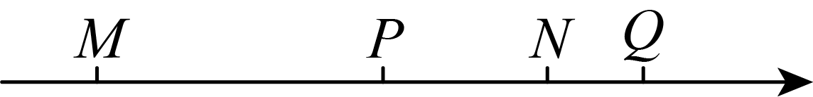
A．点M B．点P C．点N D．点Q
【答案】A
【分析】本题考查数轴、绝对值、相反数的意义，根据“点P，Q表示的有理数互为相反数，”可得原点在PQ的中点处，从数轴上可以看出点M距原点最远，得出点M表示的数的绝对值最大．
【详解】解：∵点P，Q表示的有理数互为相反数，
∴原点在PQ的中点，此时点M距原点最远，
因此点M所表示的数的绝对值最大，
故选：A．
6．（3分）（24-25七年级上·广东佛山·期末）下列哪个图形经过折叠可以围成棱柱（ ）
A．
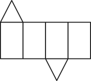
B． C．
C．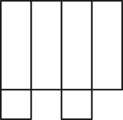
D．
【答案】D
【分析】本题考查了展开图折叠成几何体，根据三棱柱、四棱柱、五棱柱的展开图的特征进行判断即可得解．
【详解】解：A、由图形可得，折叠成的几何体底面时三角形，有3个侧面，但出现4个侧面，故不符合题意；
B、由图形可得，折叠成的几何体两个底面不相同，一个底面是正方形，一个底面是五边形，故不符合题意；
C、由图形可得，该图形不是长方体的表面展开图，故不符合题意；
D、由图形可得，折叠成五棱柱，故符合题意；
故选：D．
7．（3分）若单项式−12ma−1n3与m3nb的和是单项式，则ab的值（ ）
A．16 B．48 C．64 D．−12
【答案】C
【分析】本题考查了合并同类项，已知字母的值 ，求代数式的值，利用单项式的和是单项式得出其为同类项是解题关键．
根据单项式的和是单项式，可得−12ma−1n3与m3nb是同类项，根据同类项的意义，求出a,b的值，进而即可解题．
【详解】解：∵单项式−12ma−1n3与m3nb的和是单项式，
∴ −12ma−1n3与m3nb是同类项，
∴a−1=3,b=3，
解得a=4，
则ab=43=64，
故选：C．
8．（3分）多项式8x2−2x−3与多项式3x3−4mx2−x+7相加后，不含二次项，则m的值是（ ）
A．2 B．4 C．﹣2 D．﹣4
【答案】A
【分析】先计算整式的加法，再根据不含二次项，令二次项的系数为0解答即可．
本题考查了整式加减中的无关型问题，熟练掌握相关运算法则和性质是解题的关键．
【详解】解：根据题意，得8x2−2x−3+3x3−4mx2−x+7=3x3+8−4mx2−3x+4，
由多项式8x2−2x−3与多项式3x3−4mx2−x+7相加后，不含二次项，
故8−4m=0，
解得m=2，
故选：A．
9．（3分）（25-26七年级上·江苏扬州·阶段练习）若a，b互为相反数，x，y互为倒数，p是最大的负整数，p，q在数轴上对应的两点的距离是3，则a+bp+xy−q2的值是（ ）
A．−2 B．−3 C．−2或−12 D．−3或−15
【答案】D
【分析】本题考查了有理数的混合运算，相反数，绝对值，倒数的定义．根据相反数，倒数，数轴上两点的距离分别表示出a+b=0，xy=1，p=−1，q−p=3或p−q=3，求出q，然后代入求解即可．
【详解】解：由题意得：a+b=0，xy=1，p=−1，
∵p，q在数轴上对应的两点的距离是3，
∴q−p=3或p−q=3，
即：q−(−1)=3或−1−q=3，
∴q=2或q=−4，
∴原式=0−1+1−(−4)2=−15或原式=0−1+1−22=−3．
故选：D．
10．（3分）（24-25七年级上·山东临沂·期中）如图是一种转盘型密码，每次开锁时需要先把表示“0”的刻度线与固定盘上的标记线对齐、再按顺时针或逆时针方向旋转带有刻度的转盘三次，例如，按逆时针方向旋转5个小格记为“+5”，此时标记线对准的数是5．再顺时针旋转2个小格记为“−2”，再逆时针旋转3个小格记为“+3”，锁可以打开，那么开锁密码就可以记为“+5，−2，+3．此时标记线对准的数是6．如果一组开锁密码为“−15，+10，−5”要想打开锁，按上述规定方式旋转锁盘，锁打开时标记线对准的刻度线表示哪个数？（ ）
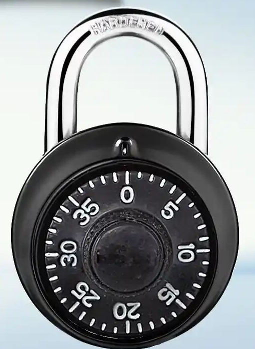
A．10 B．0 C．30 D．25
【答案】C
【分析】本题考查了正负数的意义，根据开锁密码的意义即可得解，根据实际问题理解表示具有相反意义的量是解题的关键．
【详解】解：∵按逆时针方向旋转5个小格记为“+5”，此时标记线对准的数是5．再顺时针旋转2个小格记为“−2”，再逆时针旋转3个小格记为“+3”，锁可以打开，那么开锁密码就可以记为“+5，−2，+3，此时标记线对准的数是6，
∴开锁密码为“−15，+10，−5”，表示先按顺时针方向转15格，再按逆时针方向转10格，再按顺时针方向转5格，
所以标记线按顺时针转了10格，
则锁打开时标记线对准的刻度线表示为30，
故选：C．
二．填空题（共6小题，满分18分，每小题3分）
11．（3分）在一个棱柱中，一共有18条棱，则这个棱柱有个 侧面．
【答案】6
【分析】本题考查棱柱，熟知n棱柱的棱数和侧面数与n的关系是解答的关键．设该棱柱为n棱柱，则棱的条数为3n，由此可求得n和侧面数．
【详解】解：设该棱柱为n棱柱，由题意，
得：3n=18，
解得：n=6，
∴该棱柱有6个侧面，
故答案为：6．
12．（3分）（25-26九年级上·吉林·开学考试）若2a−b+5=0，则32a+b−6b的值为 ．
【答案】−15
【分析】本题考查了整式的加减，求代数式的值，运用整体思想是解题的关键；由已知变形得2a−b=−5，6a−3b=−15，再把32a+b−6b化简得6a−3b，再整体代入即可．
【详解】解：∵2a−b+5=0，
∴2a−b=−5，
∴6a−3b=−15，
∴32a+b−6b=6a+3b−6b=6a−3b=−15，
故答案为：−15．
13．（3分）（24-25七年级下·贵州铜仁·期末）从如图所示的7个小正方形中剪去一个小正方形，使剩余的6个小正方形折叠后能围成一个正方体，则剪去的小正方形上的字是 ．
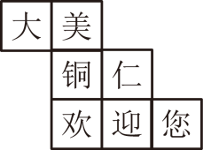
【答案】欢
【分析】本题考查了正方体的展开图，根据长方体的展开图有“1−4−1”型、“1−3−2”型、“2−2−2”、“3−3”型解答即可．
【详解】解：根据正方体的展开图可得：要使剩余的个小正方形折叠后能围成一个正方体，应剪去标记为“欢”的小正方形．
故答案为：欢．
14．（3分）如图，C，D是数轴上的两点，它们分别表示−2.4，1.6，O为原点，则线段CD的中点表示的有理数是 ．
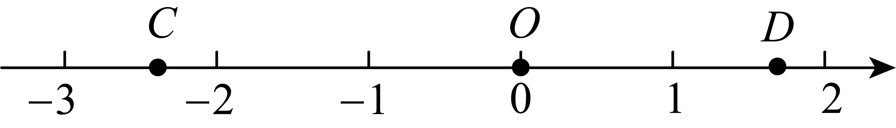
【答案】−0.4/−25
【分析】本题考查了有理数与数轴，线段中点的特点．
已知两个点所表示的有理数，求它们中点表示的有理数，就是将这两个数相加，然后除以2，即可解题．
【详解】解：因为C，D是数轴上的两点，它们分别表示−2.4，1.6，
所以线段CD的中点表示的有理数是−2.4+1.62=−0.4，
故答案为：−0.4．
15．（3分）将图1中周长为28的长方形纸片剪成1号、2号、3号、4号正方形和5号长方形，并将它们按图2的方式放入周长为38的长方形中，则没有覆盖的阴影部分的周长为 ．
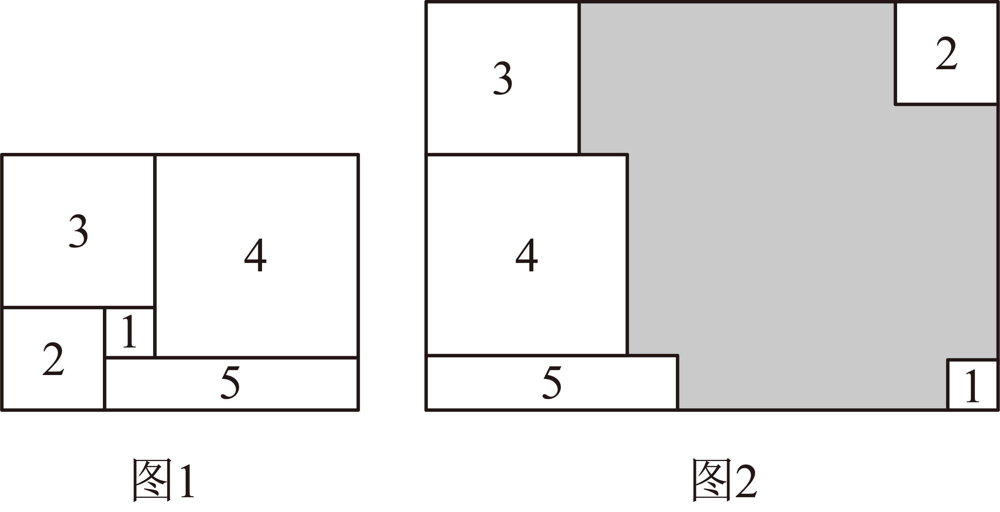
【答案】31
【分析】本题主要考查的是整式的加减的应用、列代数式等知识点，列代数式表示出正方形的边长成为解题的关键．
设1号正方形的边长为x，2号正方形的边长为y，则3号正方形的边长为x+y，4号正方形的边长为2x+y，5号长方形的长为3x+y，宽为y−x，根据图1中是周长为28的长方形，计算出x+y=72，然后再列出图2中长方形的周长和没有覆盖的阴影部分的周长代数式，将x+y=72代入计算即可．
【详解】解：设1号正方形的边长为x，2号正方形的边长为y，则3号正方形的边长为x+y，4号正方形的边长为2x+y，5号长方形的长为3x+y，宽为y−x，
如图1中是周长为28的长方形，可得y+3x+y+y+x+y=14，
解得：x+y=72，
将A、B、C、D四点在图2中标出，如图所示：
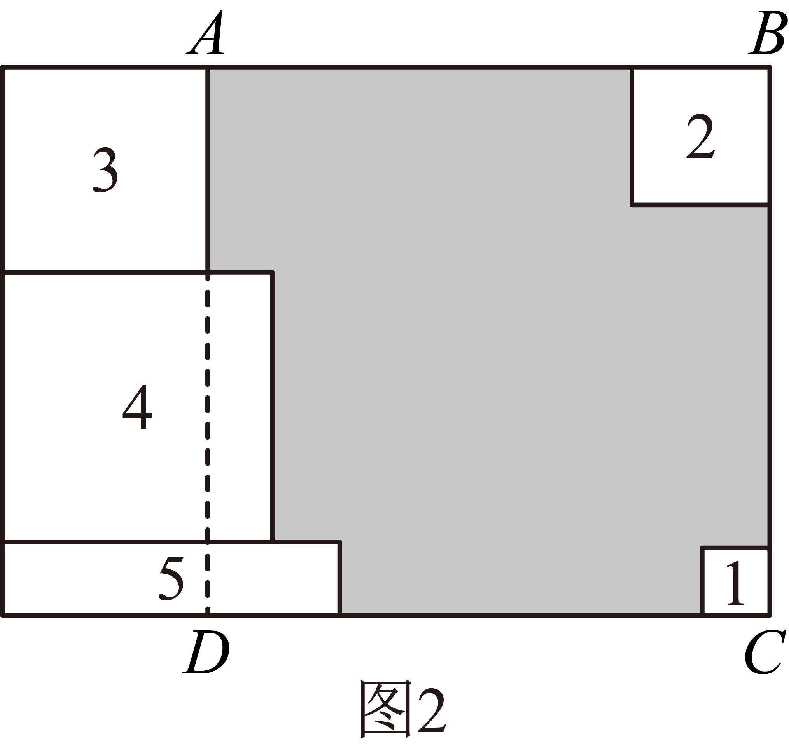
如图，图2中长方形的周长为38，
∴AB+x+y+x+y+2x+y+y−x=19，
∴AB=19−3x−4y，
根据平移得，没有覆盖的阴影部分的周长是如图中四边形ABCD的周长，
∴2AB+AD
=2×19−3x−4y+x+y+2x+y+y−x
=2×19−x−y
=38−2x+y
=38−2×72
=31．
故答案为：31．
16．（3分）（24-25七年级下·江苏泰州·阶段练习）把一个正三角形分成四个全等的三角形，第一次挖去中间的一个小三角形，对剩下的三个小正三角形再重复以上做法⋯⋯设第99次挖去后剩下的三角形个数为a，第100次挖去后剩下的三角形个数为b，那么a−23b= ；（结果用3为底数的幂表示）
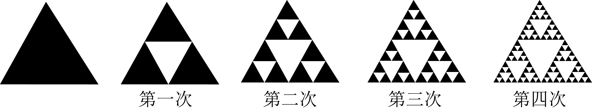
【答案】−399
【分析】本题主要考查了图形变化规律，列代数式，有理数的乘方运算，观察出后一个图形剩下的三角形是前一个图形剩下的三角形的3倍是解题的关键，根据挖去的规律，每挖去一次，原来的一个三角形剩下3个，即后一个图形剩下的三角形是前一个图形剩下的三角形的3倍，根据此规律写出第n个图形中剩下的三角形的个数，进而即可得解．
【详解】解：第一次挖去后剩下的三角形的个数为：3，
第二次挖去后剩下的三角形的个数为：9×3=32，
第三次挖去后剩下的三角形的个数为：27=9×3=33，
第四次挖去后剩下的三角形的个数为：81=27×3=34，
⋯，
第n次挖去后剩下的三角形的个数为：3n，
∴第99次挖去后剩下的三角形个数为a=399，第100次挖去后剩下的，三角形个数为b=3100，
∴a−23b=399−23×3100=399−2×399=−399，
故答案为：−399．
第Ⅱ卷
三．解答题（共8小题，满分72分）
17．（6分）把下列各数填入表示它所属的括号内：
+2，−3，0，−312，−1.414，23，−34，21，π．
整数：{_____}；
负分数：{______}；
负有理数：{______}．
【答案】+2，−3，0，21；−312，−1.414；−3， −312，−1.414．
【分析】本题考查了有理数的分类，求一个数的绝对值，根据整数和分数统称为有理数，负数小于0，按要求填入即可，需要注意0既不是正数也不是负数，但是整数．
【详解】解：−34 =34
整数：{+2，−3，0，21}；
负分数：{−312，−1.414}；
负有理数：{−3， −312，−1.414 }．
故答案为：+2，−3，0，21；−312，−1.414；−3， −312，−1.414．
18．（6分）（25-26七年级上·全国·阶段练习）计算：
(1)6×26×(−13)÷(−136)；
(2)−14−16×[2−(−3)2]÷(−76)．
【答案】(1)24
(2)−2
【分析】（1）先将分数除法转化为乘法，再去括号并约分化简即可；
（2）先算括号里面的，乘方，再算乘除，最后算加减即可．
本题考查了有理数的混合运算，掌握有理数混合运算的法则是解题的关键．
【详解】（1）解：原式=6×26×(−13)×(−613)
=6×26×13×613
=24；
（2）解：原式=−1−16×(2−9)×(−67)
=−1−16×(−7)×(−67)
=−1−16×7×67
=−1−1
=−2．
19．（8分）（24-25七年级上·甘肃兰州·期末）将8个同样大小的小正方体搭成如图所示的几何体．
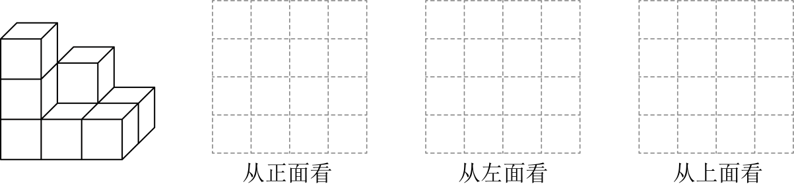
(1)请分别画出从正面、左面、上面观察如图所示的几何体的形状图；
(2)若正方体的棱长为1，这个几何体表面积是 ．
【答案】(1)见解析
(2)32
【分析】本题考查从不同方向观察几何体，掌握良好的空间想象能力是解题的关键．
（1）根据从不同方向看几何体的特点画图即可；
（2）根据正方体求出几何体的表面积即可．
【详解】（1）解：如图所示，
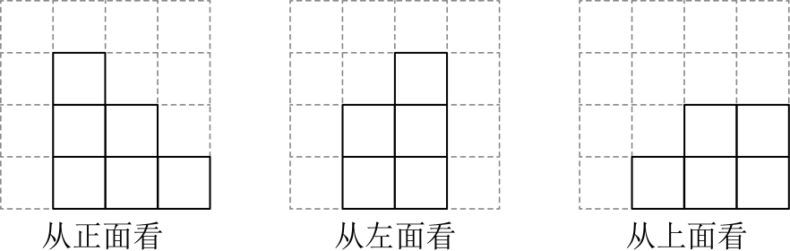
（2）解：∵正方体的棱长为1，
∴6+5+5×2=32
∴这个几何体表面积是32．
20．（8分）（24-25七年级上·全国·期末）已知A=3x2−3mx+2y,B=2nx2−2x+3y，是关于x,y的多项式，其中m,n为常数．
(1)若A+B的值与x的取值无关，求m,n的值．
(2)在（1）的条件下，先化简m2n−212m2n+4n+32m2n+n，再求值．
【答案】(1)m=−23,n=−32
(2)6m2n−5n,72
【分析】本题考查了整式的加减无关型问题，整式的加减-化简求值，掌握整式的运算法则是解题的关键．
（1）求出A+B的结果，再根据A+B的值与x的取值无关，可得含x项的系数为0，据此即可列方程求解；
（2）先对整式进行化简，再把（1）中所得m、n的值代入化简后的结果中计算即可求解．
【详解】（1）解：∵A=3x2−3mx+2y,B=2nx2−2x+3y，
∴A+B=3x2−3mx+2y+2nx2−2x+3y=3+2nx2−3m+2x+5y，
∵A+B的值与x的取值无关，
∴3+2n=0,3m+2=0，
∴m=−23,n=−32；
（2）原式=m2n−m2n−8n+6m2n+3n
=6m2n−5n，
∵m=−23,n=−32，
∴原式=6×−232×−32−5×−32=−4+152=72．
21．（10分）（25-26七年级上·吉林长春·期末）为了更好的推进“阳光体育”活动，在八年级的足球联赛活动期间，某足球守门员在直线跑道上练习折返跑，从初始位置出发，向前跑记作正数，向后跑记作负数，他的练习记录如下（单位：m）：+5，−3，+10，−8，−6，+13，−10．
(1)守门员最后是否回到了初始位置？
(2)本次练习中守门员共跑了多少米？
【答案】(1)守门员最后没有回到初始位置
(2)本次练习中守门员共跑了55米
【分析】本题考查了正负数的应用、有理数加法的应用、绝对值，理解题意正确列出算式是解题的关键．
（1）计算求出数据的代数和，即可得出结论；
（2）计算求出数据的绝对值的和，即可解答．
【详解】（1）解：+5+−3++10+−8+−6++13+−10=1（米），
答：守门员最后没有回到初始位置；
（2）解：+5+−3++10+−8+−6++13+−10=55（米），
答：本次练习中守门员共跑了55米．
22．（10分）如图，将边长为m的正方形纸板沿虚线剪成两个小正方形和两个长方形，拿掉边长为n的小正方形纸板后，再将剩下的三块拼成一个新长方形．m>n
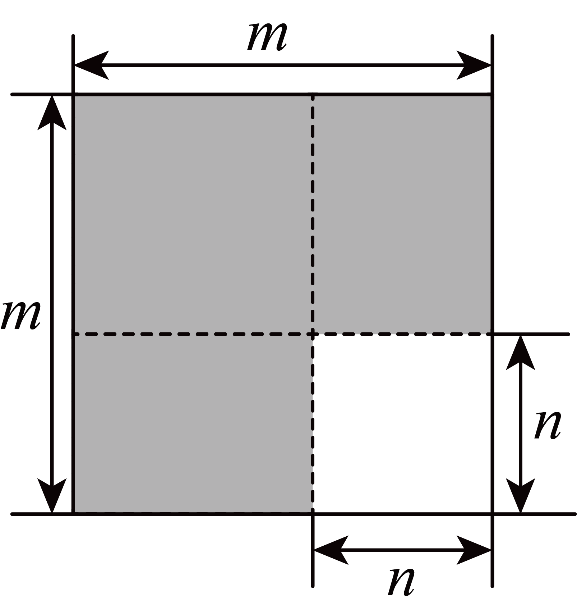
(1)当m=12，n=5时，求拼成的长方形周长；
(2)小明说：“如果m的值不变，那么不管n取什么值，拼成的长方形的周长都不变．”请问小明的说法对吗?请说明理由．
【答案】(1)48
(2)小明的说法对，因为长方形的周长是4m，与n的取值无关
【分析】本题考查了整式的加减混合运算的应用，代数式求值，理解题意并正确列式是解题关键．
（1）由题意可知，拼成的长方形的长为m+n，宽为m−n，再将m、n的值代入计算即可；
（2）由（1）可知，拼成的长方形的长为m+n，宽为m−n，由长方形周长公式可得拼成的长方形的周长是4m，与n的取值无关，即可求解．
【详解】（1）解：由题意可知，拼成的长方形的长为m+n，宽为m−n，
当m=12，n=5时，拼成的长方形周长=12+5+12−5×2=48；
（2）解：由（1）可知，拼成的长方形的长为m+n，宽为m−n，
则拼成的长方形的周长为m+n+m−n×2=4m，
那么拼成的长方形的周长是4m，与n的取值无关，
即小明的说法对．
23．（12分）（24-25七年级上·宁夏银川·期中）（1）一个几何体由大小相同的小立方体搭成，从上面看到的几何体的形状如图所示，其中小正方形中的数字表示在该位置的小立方体的个数．请画出从正面和从左面看到的这个几何体的形状图．

（2）在图中增加1个小正方形使得所得图形经过折叠后能够围成一个正方体，请任意补全一种符合要求的展开图．
【答案】（1）见解析；（2）见解析（画出一种即可）
【分析】本题考查了从不同方向看几何体以及正方体的平面展开图，熟知正方形的几种平面展开图是解本题的关键．
（1）根据正面看，左面看的图形，根据各行、各列对应的立方体的个数进行画图．
（2）结合正方体的平面展开图的特征，只要折叠后能围成正方体即可．
【详解】解：（1）如图所示：
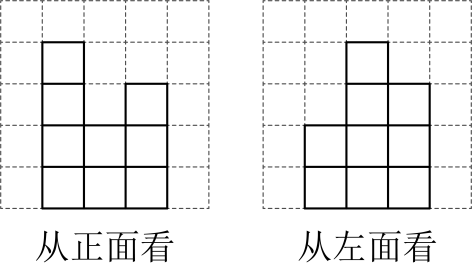
（2）如图所示：
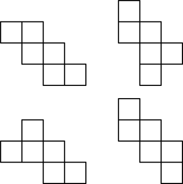
24．（12分）（24-25七年级上·湖南郴州·阶段练习）【阅读】：7−3表示7与3差的绝对值，也可理解为7与3两数在数轴上所对应的两点之间的距离；7+3可以看做7−−3，表示7与−3的差的绝对值，也可理解为7与−3两数在数轴上所对应的两点之间的距离．
【探索】：
(1)计算：5−−2=
(2)利用数轴，写出所有符合条件的整数x，使x所表示的点到5和−2所对应的点的距离之和为7．
(3)直接写出x−3+x+6的最小值及此时x的取值范围．
(4)直接写出x−3+x+2+x+6最小值及此时x的值．
【答案】(1)7
(2)−2，−1，0，1，2，3，4，5
(3)−6≤x≤3时，最小值为9
(4)最小值为9，x=−2
【分析】（1）根据题意，得5−−2=7=7，解答即可；
（2）根据题意，得x−−2+x−5=7，得到−2≤x≤5解答即可．
（3）根据题意，x−3+x+6，根据距离和的意义解答即可．
（4）根据题意，得x−9+x−8+⋯+x−1+x+x+1+⋯+x+8+x+9表示的是x与−9,−8,−7,…0,1,2,3,…9这19个数的距离之和，即21+2+3+…+9=90解答即可．
【详解】（1）解：5−−2=5+2=7=7，
故答案为：7．
（2）解：根据题意，得x−−2+x−5=7，
得到−2≤x≤5．
∴−2，−1，0，1，2，3，4，5．
（3）解：根据题意，得x−3+x+6，
当x>3时，x−3+x+6 =x−3+x+6=2x+3，此时x−3+x+6>9；
当x<−6时，x−3+x+6 =3−x−x−6=−2x−3，此时x−3+x+6>9；
当−6≤x≤3时，x−3+x+6=3−x+6+x=9，
故当−6≤x≤3时，x−3+x+6取得最小值，且最小值为9．
（4）解：根据题意，当x>3时，x−3+x+2+x+6 =x−3+x+6+x+2=3x+5，此时x−3+x+2+x+6>14；
当x<−6时，x−3+x+2+x+6 =3−x−x−6−x−2=−3x−5，此时x−3+x+2+x+6>14；
当−6≤x≤3时， x−3+x+2+x+6 =3−x+x+6+x+2=9+x+2
当x=−2时，x−3+x+2+x+6的最小值为9+0=9．
【点睛】本题考查数轴上两点间的距离公式，绝对值的意义，距离之和最小的意义，有理数的加法．熟练掌握数轴上两点间的距离公式，以及当点在两点之间时，点到两点间的距离之和最小，是解题的关键．